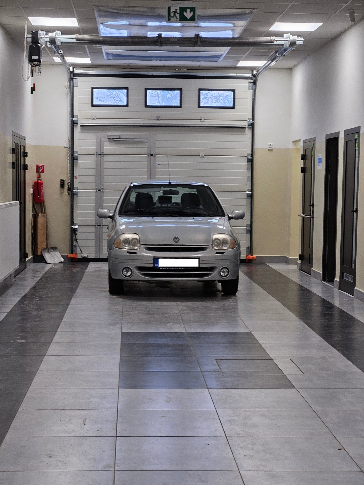
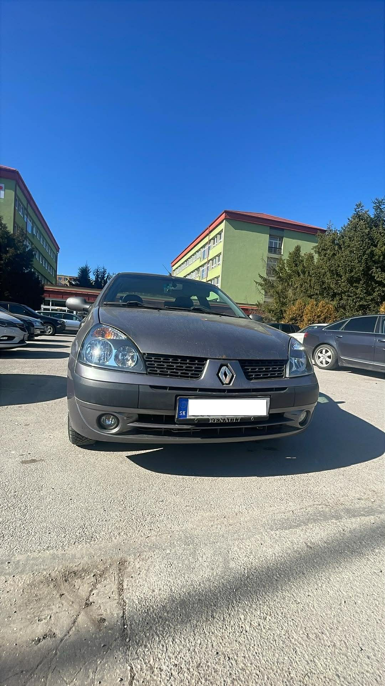
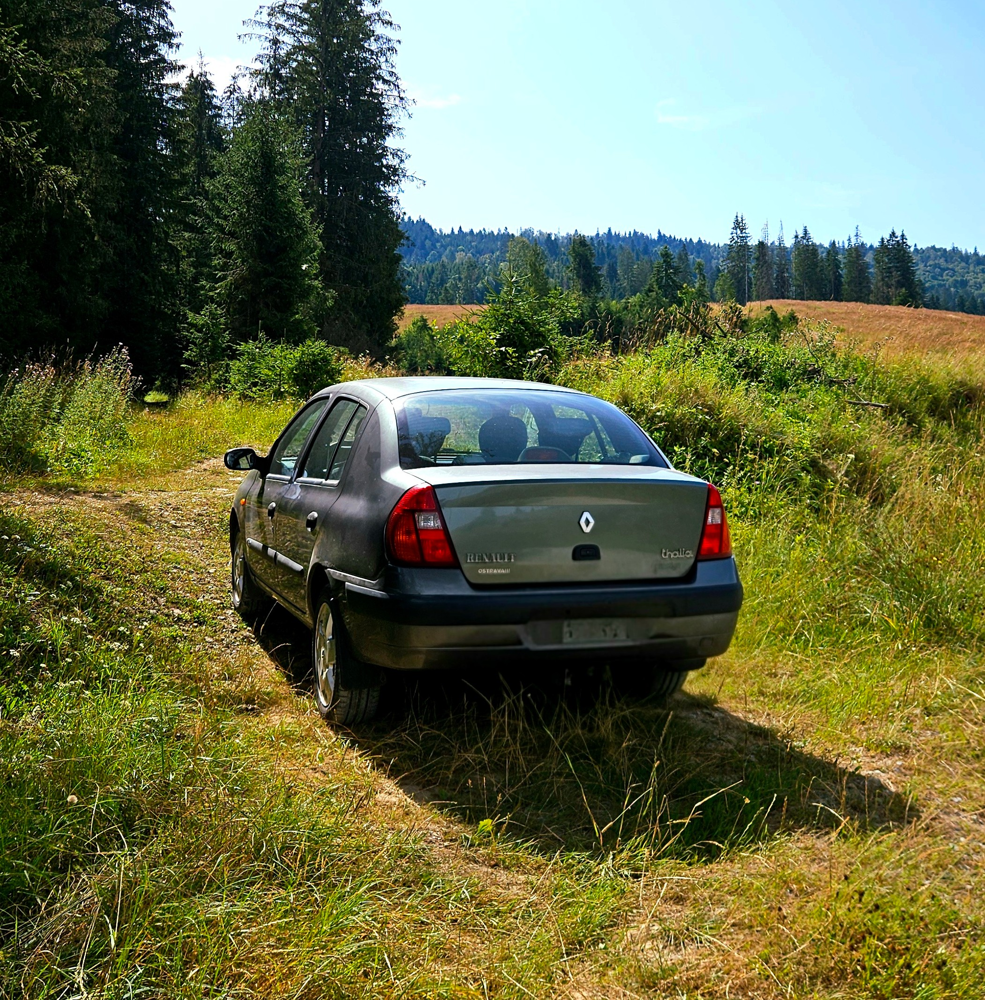
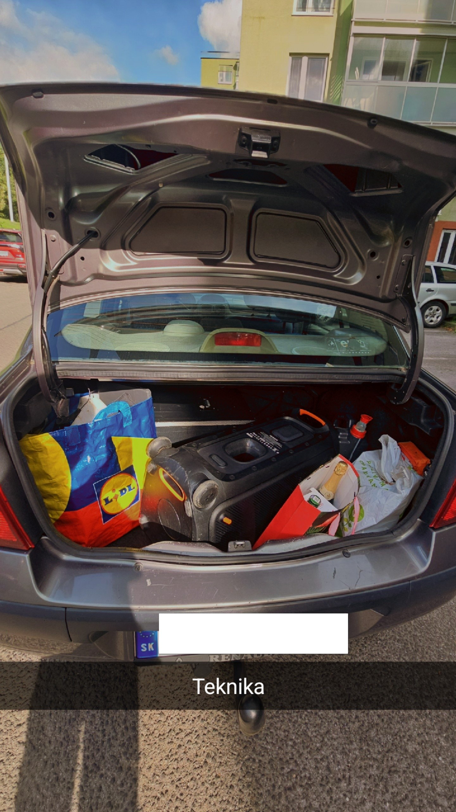

História
Prvá generácia Renault Thalia sa dostala na trh na rozhraní tisícročí, v roku 1999. Vytvorená bola ako špeciálny projekt automobilky Renault pre trhy strednej a východnej Európy, kde vodiči požadovali cenovo dostupné, no zároveň praktické rodinné auto. Základom sa stala mimoriadne úspešná druhá generácia mestského modelu Renault Clio II, ku ktorému inžinieri navrhli samostatný, výrazne predĺžený trojpriestorový zadok. Počas svojej produkcie si auto prešlo dôležitým faceliftom v roku 2002, ktorý priniesol modernejšiu prednú masku s čírou optikou svetlometov a vylepšený interiérový panel. Najväčšia revolúcia však prišla pod kapotou s príchodom turbodieselových motorov 1.5 dCi (K9K). Tieto agregáty nahradili staršie atmosférické naftové motory a priniesli dovtedy nevídanú kombináciu nízkej spotreby paliva a skvelého krútiaceho momentu od nízkych otáčok. Thalia sa aj vďaka tomu stala legendou pracovných ciest, rodinných dovoleniek aj študentských začiatkov na cestách.
Prefacelift (1999-2002)

Facelift (2002-2008)

Vzhľad
Na prvý pohľad obyčajný sedan vyrábaný v rokoch 1999 - 2008, no má niečo do seba. Výrazný "batoh" namiesto klasického hatchbacku nevypadá najlešie, no vďaka nemu máte parádnu viditelnosť v spätnom zrkadle čo pomáha aj pri parkovaní. Thalia sa nič nehrá, jej línie sú z éry, kedy autá mali svoju vlastnú dušu a unikátny dizajn, ktorý spoznáte na ceste aj v tej najhustejšej hmle.

Motorizácia
Pod kapotou ponuka začínala poctivými benzínovými štvorvalcami, ktoré boli známe svojou jednoduchou údržbou a vysokou spoľahlivosťou. Základom bol benzínový osemventilový motor 1.4 8V (55 kW), ktorý vynikal ťahom od nízkych otáčok a neskutočnou odolnosťou voči zlému zaobchádzaniu. Pre dynamickejšiu jazdu bola k dispozícii živšia verzia 1.4 16V (72 kW) a neskôr aj úsporný benzínový štvorvalec 1.2 16V (55 kW), ktorý bol ideálnou voľbou na mestské a prímestské jazdenie. Skutočnou ikonou diaľkových trás sa však stal turbodiesel 1.5 dCi (K9K) s výkonom 48 kW. Aj keď sa to na papieri môže zdať ako skromné číslo, v kombinácii s ultraľahkou karosériou okolo 950 kg ponúka príjemnú pružnosť od nízkych otáčok, no zároveň nemá problém točiť až do 4000. Nízka hmotnosť v spojení s týmto naftovým motorom dokáže zázraky na čerpacej stanici, kde sa dlhodobá spotreba bez problémov drží pod hranicou 5 litrov na 100 km a na jednu 50L nádrž sa dá v kľude najazdiť cca 1200km.
| Motor | Palivo | Výkon | Krútiaci moment | Spotreba | Akcelerácia 0-100km/h | Maximálna rýchlosť |
|---|---|---|---|---|---|---|
| 1.2 16V | Benzín | 55kW/75hp | 105Nm | 6.0L/100km | 15,0s-16,5s | 167-170kmh |
| 1.4 8V | Benzín | 55kW/75hp | 114Nm | 6,8L/100km | 16,5s | 175km/h |
| 1.4 16V | Benzín | 72kW/98hp | 127Nm | 6,6L/100km | 11,2s | 186km/h |
| 1.5dCi K9K | Nafta | 48kW/65hp | 160Nm | 4,0L-5,0L/100km | 13,0s-16,0s | 165km/h |
Spoľahlivosť a mechanická jednoduchosť
Najlepšie auto je to, ktoré vás nikdy nikde nenechá a jeho servis/oprava nezruinuje rozpočet.Thalia využíva poctivú mechaniku bez zbytočne zložitej elektroniky. Všetky základné servisné úkony, od výmeny oleja cez filtre až po brzdy, zvládne zručnejší majiteľ s pár kľúčmi priamo pred domom. Diely sú cenovo dostupné a konštrukcia je navrhnutá tak, aby vydržala státisíce kilometrov, čomu naznačuje minimálna korózia vzhľadom na vek auta.
Nečakaná veľkosť kufru
Hlavným perkom auta je bezpochybne batožinový priestor. S kufrom o objemu 510L sa nemusíte báť rodinných nákupov či sťahovania na internát pri 2-3 osobách.

Podvozok a jazdný komfort
Mäkké francúzske naladenie podvozka dokáže s prehľadom žehliť aj tie najrozbitejšie cesty a rozbitý asfalt aj keď sa môže ozvať jemný hluk z podvozku no pri rádiu to počuť nebude :3. Z pohľadu dialničnej rýchlosti 130km/h, motor už je dosť počuť a hluk od pneumatík a vozovky tomu moc nepomáha, no pri vyššej hlasitosti rádia to nieje až také zlé :3